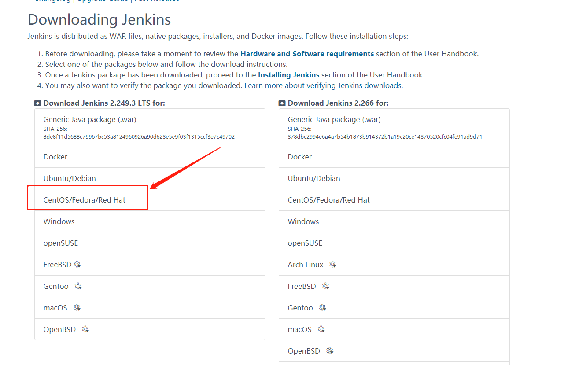
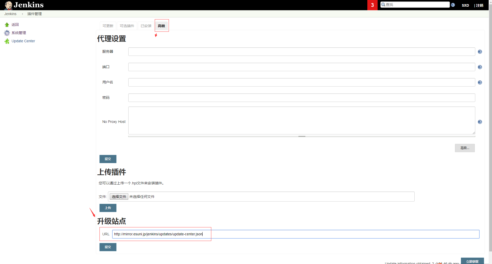

CentOS7安装Jenkins
首先登录服务器更新系统软件
1 | $ yum update |
安装Java和git
1 | $ yum install java |
注意java的版本来选择不同版本的Jenkins，上面一般会自动安装最行版本的Java-sdk。
安装nginx
1 | $ yum install nginx //安装 |
出现Redirecting to /bin/systemctl start nginx.service
说明nginx已经启动成功了，访问http://你的ip/，如果成功安装会出来nginx默认的欢迎界面
安装Jenkins
首先我们进入到Jenkins官网，传送门：https://jenkins.io/download/
这时我们会看到两栏，左边的Stable (LTS)是12周发布一版，右边的Weekly是每周发布一个版本。
这里我们以Stable为例进行安装，拖动页面找到你自己的系统并点击

选择Weekly版本时，有可能受网络、jenkins.noarch导入不了等原因安装不成功，同时有可能安装成功后，插件无法安装
添加Jenkins repo:
1 | wget -O /etc/yum.repos.d/jenkins.repo http://pkg.jenkins.io/redhat-stable/jenkins.repo |
更新Jenkins repo cache：
1 | yum clean all |
安装Jenkins：
1 | yum install -y jenkins |
如果yum install安装慢，可以多尝试几次（网络对jenkins.noarch的下载很重要，有很大概率会失败），也可以到http://pkg.jenkins-ci.org/redhat-stable/ 中下载指定版本的安装包，再通过rpm来安装。
也可以使用国内Jenkins镜像来安装：1
2
3// 清华大学镜像
wget https://mirrors.tuna.tsinghua.edu.cn/jenkins/redhat-stable/jenkins-2.164.2-1.1.noarch.rpm
rpm -ivh jenkins-2.164.2-1.1.noarch.rpm
启动Jenkins
安装完成后启动Jenkins：
1 | # 检查Jenkins服务状态 |
为Jenkins开启防火墙8080端口：
1 | # 检查防火墙配置 |
在浏览器中访问http://<jenkins_host_ip>:8080确认是否可以打开Jenkins的Getting Started页面。
运行sudo cat /var/lib/jenkins/secrets/initialAdminPassword，复制Jenkins初始密码，输入到Jenkins的Getting Started页面来Unlock Jenkins。
配置Jenkins
这里一般使用推荐插件进行安装，等待Jenkins插件安装完成。
使用http://pkg.jenkins-ci.org/redhat/jenkins.repo或https://pkg.jenkins.io/redhat/jenkins.repo，安装最新版本的Jenkins都有大概率的jenkins.noarch或插件安装失败，按照网上的各种处理方式都没有办法处理
例如：系统管理 -》 插件管理 -》 高级
将升级站点的URLhttp://updates.jenkins-ci.org/update-center.json更改为http://mirror.esuni.jp/jenkins/updates/update-center.json

创建Jenkins的管理员账号，用该账号来登录Jenkins继续其它配置
卸载Jenkins
1 | // 卸载rpm方式安装的jenkins |